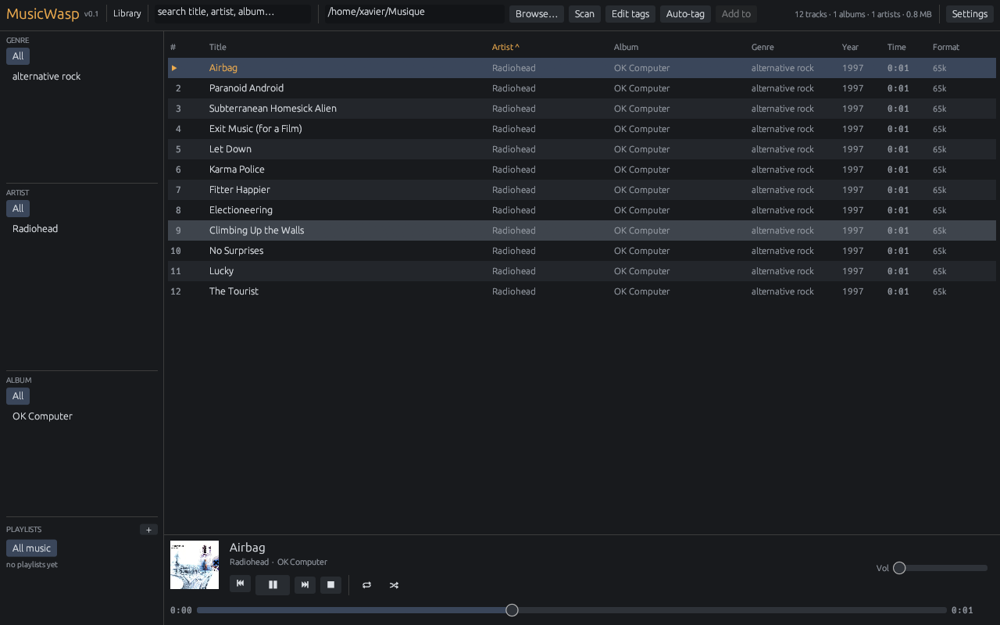
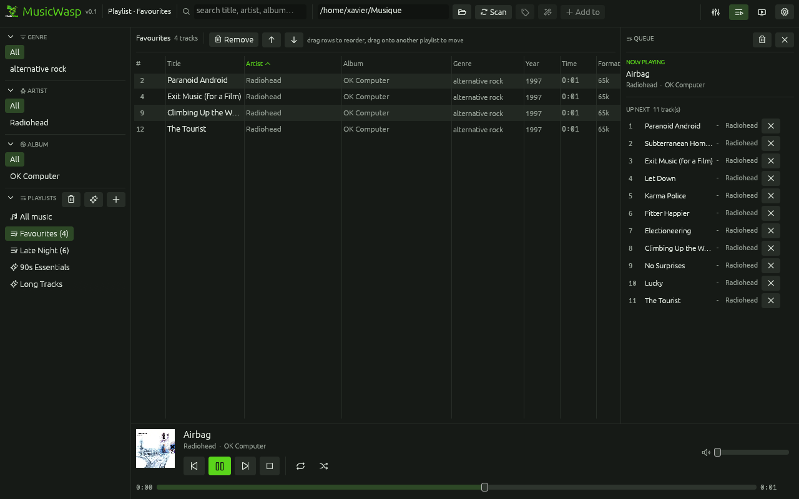
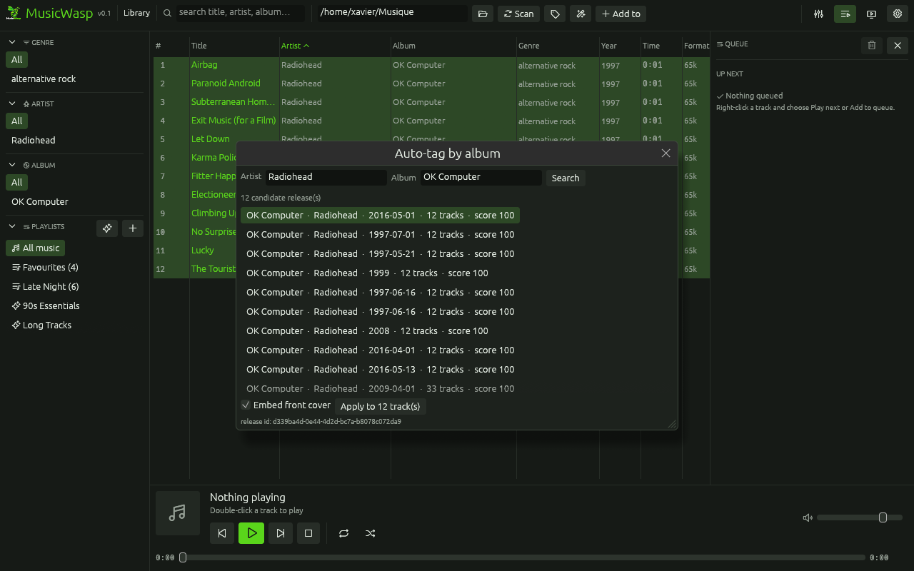
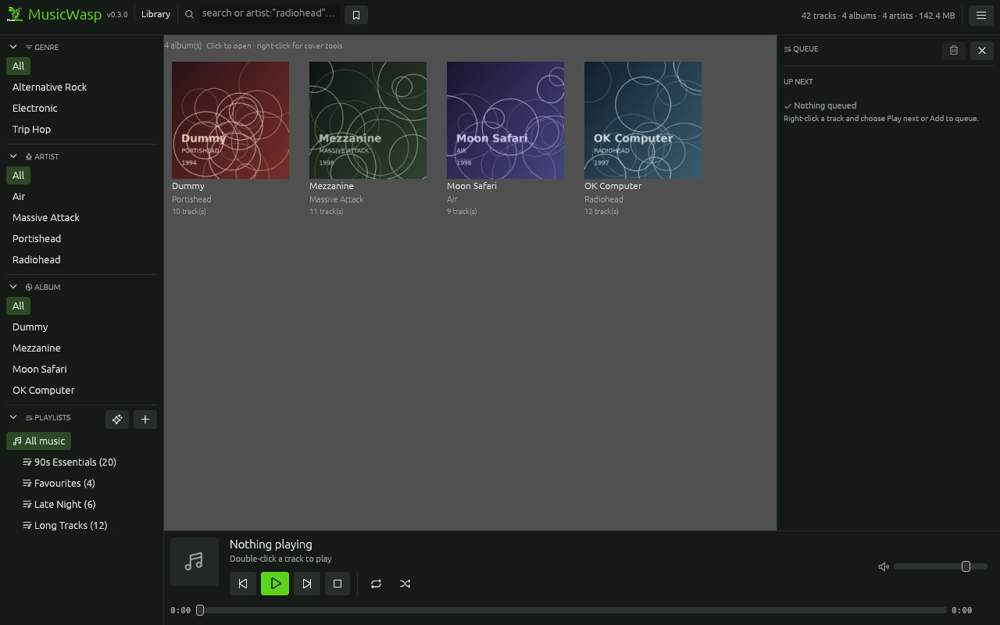
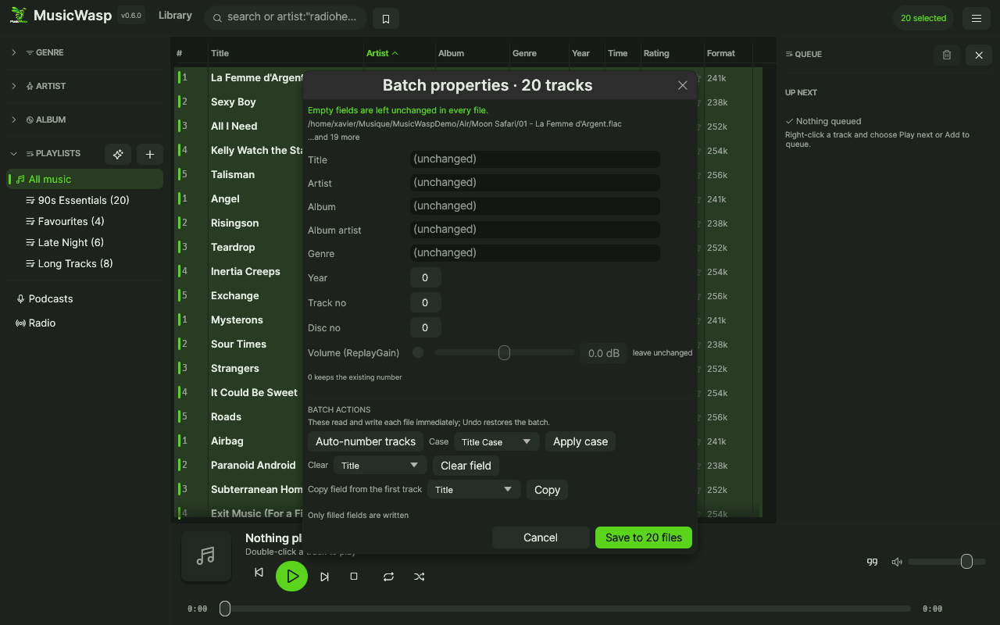
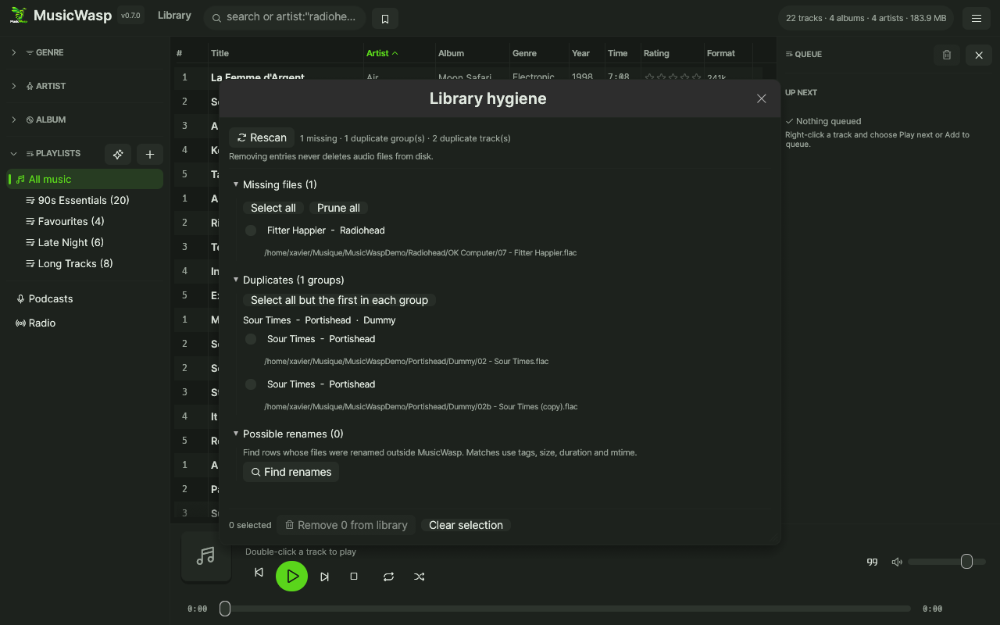
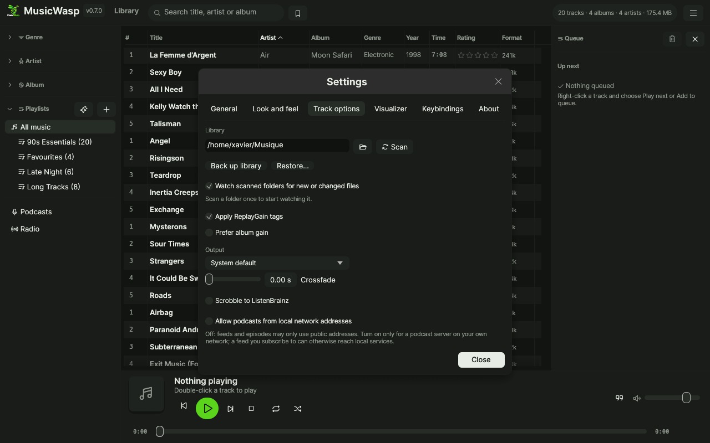

Library & browsing
Recursive scan of 18 audio formats, sortable table, foldable genre → artist → album browser, search, playlists and editable rule-based smart playlists.
Linux · Windows · GPL-3.0
MusicWasp is a music manager and player. Point it at your folders, browse by genre, artist and album, play, fix tags and keep playlists in one native binary.

Everything in one window
Fast SQLite indexing and direct tag writes. No account, no sync service, no browser engine.
Recursive scan of 18 audio formats, sortable table, foldable genre → artist → album browser, search, playlists and editable rule-based smart playlists.
Resize, reorder and hide track-list columns; the arrangement survives restarts. Switch to compact rows for density or album-art rows with cover thumbnails.
Filter by fields with artist:"radiohead" year:1997, numeric ranges and exact matches. Save named queries and reopen them from the bookmark menu beside the search box.
Organize playlists in nested folders, drag them between folders, and import or export M3U/M3U8 files with #EXTINF metadata. Imports resolve relative paths and index any missing audio.
Logical Tab order, screen-reader labels on icon controls, visible focus rings, a 120% larger-text mode and a high-contrast skin.
Play, pause, seek, volume, repeat and shuffle. A visible Up Next queue with drag reordering, gapless preloading, 1–12 s crossfade, ReplayGain, selectable output devices and optional ListenBrainz scrobbling.
Edit title, artist, album, album artist, genre, year, track and disc. Batch edits write only the fields you fill in, with an undo snapshot before every write.
Search MusicBrainz by artist and album, review the file-to-release-track table, override rows, inspect tag diffs, then write metadata and cover art.
Album grid with artwork. Fetch missing covers from the Cover Art Archive, replace a cover, or save it as a cover.jpg sidecar.
Find rows whose files disappeared, detect duplicate artist/title/album groups, and remove entries from the library without ever deleting audio files.
Scans run off the UI thread with live counts and a stop button. Repeat scans skip unchanged files using mtime and size, and SQLite writes are committed in batches.
Scanned folders are watched with notify. New audio is imported automatically and external tag edits refresh existing rows.
MPRIS2 support for GNOME/KDE controls, lock screens, playerctl and Bluetooth headset buttons. Desktop launcher, icon and file drops included.
Reopens the last view, search, selection, volume, queue and window geometry. Playback always starts stopped; press Space to begin.
Trust-first workflows
Matching scores disc/track numbers, titles and durations instead of relying on file order. The mapping table shows each file, its release track and the exact field changes before anything is written.
Open the tag editor for several tracks and use the batch actions panel. These write immediately, per file, and share the same undo batch.
Library hygiene lists missing paths and duplicate recordings. Selection is explicit and removal asks for confirmation; playlist rows cascade, audio files stay on disk.
Switch the track table to an album grid, then right-click a tile. Embedded art is used first; folder sidecars such as cover.jpg and folder.png fill the gaps.
cover.jpg sidecarScreenshots
MusicWasp Dark is the default skin. Midnight, Forest, Mono, High contrast and a light skin are included.






Get started
$ sudo apt install libasound2-dev pkg-config
$ cargo build --release
$ ./scripts/install-desktop.shRelease archives include the binaries, desktop entry, icon and install script. The app prefers XWayland so file-manager drag and drop works.
> cargo build --release
> .\target\release\musicwasp.exeThe MSVC toolchain is enough. SQLite is compiled in and audio goes through WASAPI; the executable carries the app icon and version metadata.
Requirements: stable Rust 1.85 or newer. Music files stay local; MusicWasp talks to MusicBrainz and the Cover Art Archive only when you ask it to auto-tag or fetch a cover.
Latest releaseKeyboard first
Every binding is rebindable in Settings, with conflict detection.